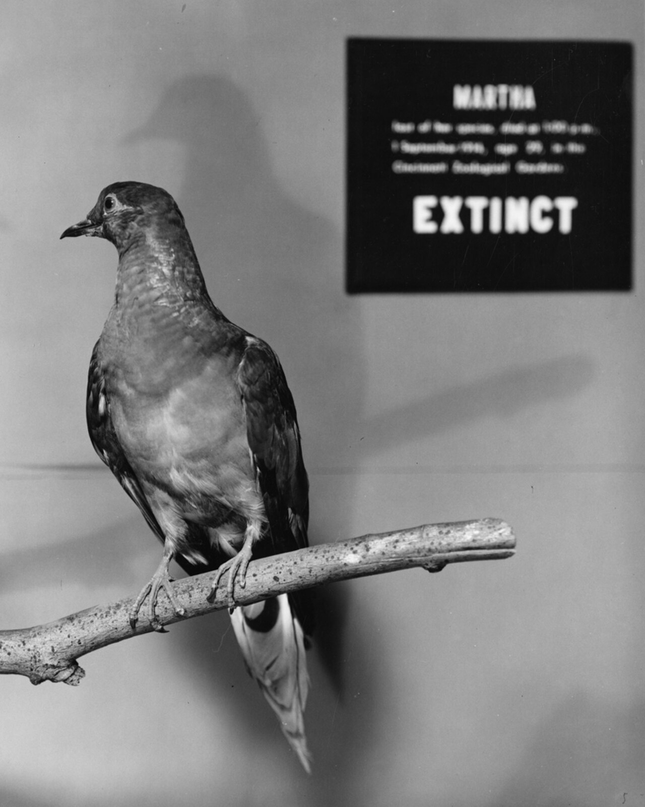
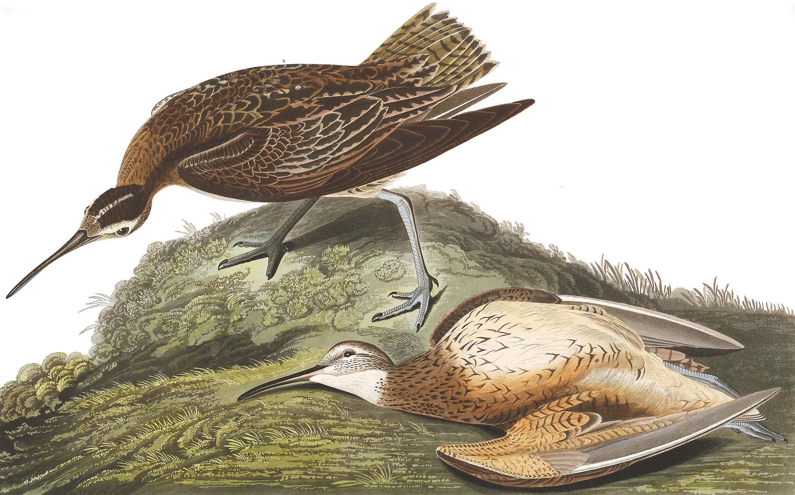
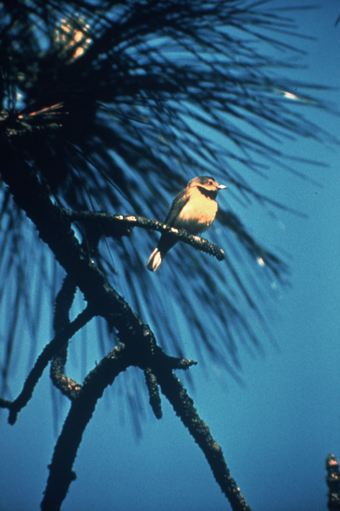
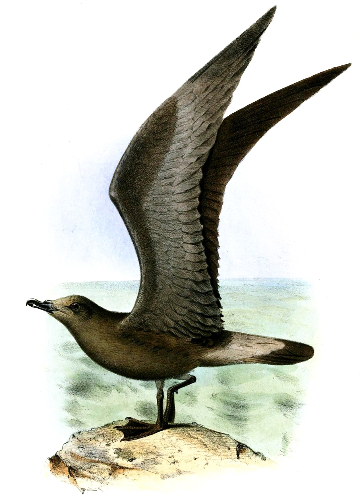
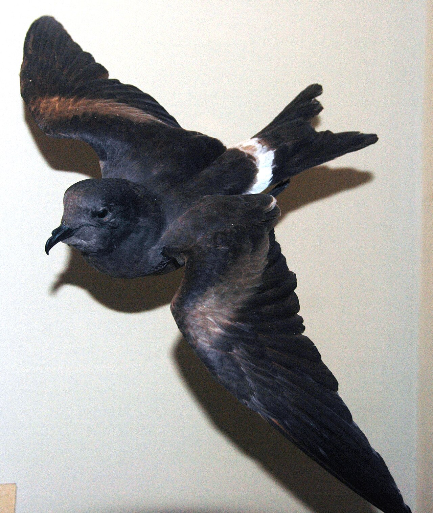

Une enquête environnementale sur les mécanismes de la perte, à partir des dernières données de BirdLife International.
Le 2 février 1995, Chris Gomersall photographiait un courlis à bec grêle (Numenius tenuirostris) à Merja Zerga, au Maroc. C’est la dernière photographie connue de l’espèce. Personne ne savait alors que cette observation serait retenue comme sa dernière apparition confirmée sur Terre.
Avec la publication du rapport State of the World's Birds de BirdLife, le doute a fait place à une certitude sombre pour cette espèce : son extinction a été officiellement déclarée. Elle figure parmi sept espèces migratrices disparues ou présumées éteintes au cours des 150 dernières années ; toutes les sept ne sont pas classées comme définitivement éteintes.
Le rapport rappelle qu’une voie migratoire n’est pas une simple ligne sur une carte, mais une chaîne étroitement liée. Si un maillon se rompt — marais de reproduction en Sibérie ou baie d’alimentation en Méditerranée — tout le cycle de vie de l’espèce peut être menacé.
Dossiers : sept espèces perdues ou présumées disparues
L’examen des archives de l’organisation montre que six de ces oiseaux vivaient sur les routes des Amériques ; la perte la plus récente et la plus frappante concerne le continent eurasiatique et africain :
1. Courlis à bec grêle — la perte confirmée la plus récente
Dernière trace : l’espèce a été officiellement déclarée éteinte dans les évaluations récentes, après des décennies sans observation confirmée depuis 1995.
Scénario de disparition : il s’agit de la première extinction mondiale confirmée d’un oiseau sur les terres d’Eurasie et d’Afrique dans l’histoire récente. Sa disparition met en évidence les faiblesses de la protection des longues voies migratoires. Malgré des recherches approfondies, ses effectifs se sont évanouis tandis que les tourbières et zones humides de ses probables lieux de reproduction étaient drainées, que des vasières méditerranéennes utilisées pour les haltes étaient détruites et que la chasse indiscriminée pesait sur son trajet.
2. Tourte voyageuse — des milliards à zéro

Date de disparition : septembre 1914, à la mort de Martha, dernière femelle connue, au zoo de Cincinnati.
Scénario : l’un des désastres écologiques les plus connus du XXe siècle. Ses vols comptaient autrefois des milliards d’oiseaux et obscurcissaient le ciel d’Amérique du Nord. La chasse commerciale industrielle pour la viande bon marché et l’abattage des forêts de feuillus qui la nourrissaient ont brisé son système de reproduction en masse et l’ont fait disparaître en quelques décennies.
(Ectopistes migratorius)
3. Courlis esquimau — tirs lors des haltes migratoires

Statut : en danger critique, possiblement éteint ; dernière observation déterminante en 1963. Son extinction n’est pas formellement confirmée.
Scénario : il parcourait une longue route de la toundra arctique à l’Amérique du Sud. Les chasseurs le capturaient par millions pour les marchés alimentaires lorsqu’il faisait halte, épuisé, dans les Grandes Plaines américaines. La conversion des prairies en terres agricoles a également bouleversé son alimentation.
(Numenius borealis)
4. Eider du Labrador — une alimentation très spécialisée

Date de disparition : 1878, premier des sept à disparaître pendant la période considérée.
Scénario : ce canard marin avait un bec adapté à la recherche de petits mollusques et crustacés sur les côtes nord-américaines. Le commerce des plumes et des œufs, la pollution des estuaires et le déclin des mollusques lié aux activités des colons ont achevé des populations déjà fragiles.
(Camptorhynchus labradorius)
5. Paruline de Bachman — forêts détruites en été comme en hiver

Dernière trace : fin des années 1980, avec une dernière observation documentée en 1988.
Scénario : ce petit passereau migrait entre les marais du sud des États-Unis et les forêts de Cuba. Le drainage des forêts marécageuses au nord et la conversion des bois cubains d’hivernage en plantations de canne à sucre l’ont privé de refuge aux deux extrémités de son voyage.
(Vermivora bachmanii)
6. Pétrel de la Jamaïque — proie des espèces introduites

Statut : dernière trace en 1879 ; classé en danger critique et possiblement éteint, sans confirmation définitive de l’extinction.
Scénario : cet oiseau marin nichait dans des terriers des hautes terres jamaïcaines. Le danger venait surtout de son retour à terre : mangoustes et rats introduits s’attaquaient aux œufs et aux poussins sans défense dans les nids creusés dans le sol.
(Pterodroma caribbaea)
7. Pétrel de Guadalupe — des îles devenues pièges

Dernière trace : vers 1912.
Scénario : il vivait sur l’île de Guadalupe, au large du Mexique. Les chèvres introduites ont détruit la mince couverture végétale protégeant ses terriers de nidification ; les chats redevenus sauvages ont achevé les adultes et les poussins, jusqu’à la disparition de l’espèce.
(Hydrobates macrodactylus)